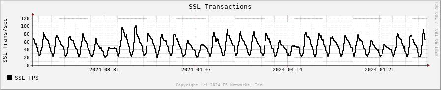
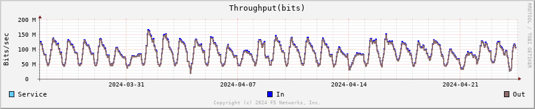
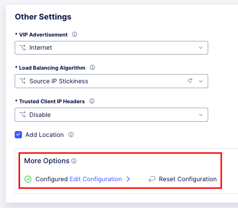
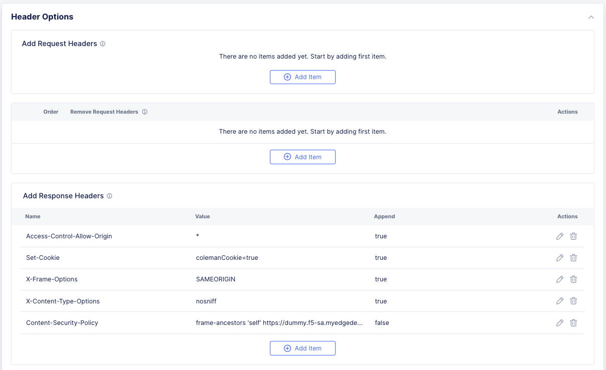
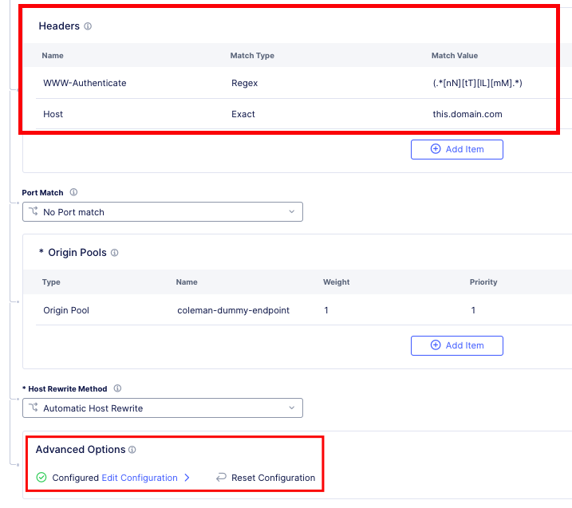

BIG-IP To Distributed Cloud Conversion Frequently Asked Questions and Tips¶
Disclaimer¶
Please note that this FAQ document is intended as a general guide and is not exhaustive. While we strive to provide accurate and up-to-date information, the rapidly evolving nature of F5 Distributed Cloud means that specific details may change over time. Therefore, this guide should not be considered a substitute for professional advice or detailed consultation relevant to your specific circumstances.
Introduction¶
This semi-comprehensive guide is designed to streamline your migration from F5 BIG-IP to F5 Distributed Cloud. This document aims to address frequently asked questions that arise during the migration process, offering clear, concise answers and practical insights to ensure a smooth transition.
Contributing¶
Please feel free to submit issues or updates to the repo listed below.
Disqualifiers¶
This is a list of use-cases that can be used to immediately disqualify a migration, with some caveats. There are service chaining use-cases that could still work, or ways to implement policies to redirect traffic to a BIG-IP instead of XC, or ways to inline NGINX into XC to carry out many of the same effects.
Access services that require Match Across. https://my.f5.com/manage/s/article/K5837
DTLS - SSLVPN
PCOIP - (HTML5 BLAST works fine)
Note
Most VPN Providers allow you to disable UDP/DTLS and force TCP, this works fine.
NTLM
Warning
With the deprecation of NTLM Announced by Microsoft, it is recommend that all customers move to Kerberos, if at all possible.
Tools¶
The following are tools available to use today. It’s important to note that none of these tools are 100%. It is highly recommended to work with an XC Specialist to help in migration from other platforms to XC.
iHealth: iHealth
VS Code Extension: VS Code Extension - VS Code Extension Diagnostics
Policy Supervisor: Policy Supervisor
BIND to XC Conversion tool: BIND to XC Conversion tool
Domain Keep-Alive Analyzer: Domain Keep-Alive Analyzer
Access Policy Manager¶
APM services are not supported in Distrubuted Cloud today, but Service/Proxy chaining is supported.
Note
There are some workable use-cases around Federated Authentication and proxy/service chaining.
AWAF to WAAP¶
Note
While we understand that some organizations have spend years, and even decades tuning a WAF policy, the recommended best practice when moving to Distributed Cloud WAAP is to start with the default recommendations, and tune from there. Service Policies will cover traditional IP blocks as well as additional IP-Geo, and additional allow/deny rules.
Web Application Firewalls (WAF) originally emerged to protect web applications by filtering and monitoring HTTP traffic between a web application and the Internet. WAFs primarily focus on defending against common web attacks such as SQL injection, cross-site scripting (XSS), and file inclusion, operating according to a set of predefined or customizable rules.
The evolution to Web Application and API Protection (WAAP) represents a shift towards a more comprehensive security framework that not only includes all the traditional protections offered by WAFs but also extends coverage to APIs, which are increasingly used as the backbone of modern applications.
Be sure to evaluate ASM Logs for WAF activity to determing which, if any policies need to be migrated.
{kind=link}
Check ASM Logs for activity.
The best way to streamline the AWAF to XC WAAP policy is to use Policy Supervisor.
Bot Defense¶
Bot Defense is likely to require XC Bot Defense Standard at a minimum, or Advanced. XC WAAP contains only Bot Signatures. A simple alternative could be XC JavaScript Challenge, which might not meet your security requirements.
Policy Supervisor¶
Policy Supervisor can be used to convert BIG-IP Adv. WAF policies to XC WAF policies.
If you do not have access to Policy Supervisor, you should check out the guidance here:
{kind=link}
Local Traffic Manager¶
There are very few disqualifiers for LTM.
Load Balancing services that require Match Across.
DTLS
PCOIP
Streaming Profiles. We do not support streaming content today in XC LBs.
E.g., Rewriting HTML page content.
OneConnect
DNS¶
Distributed Cloud DNS supports Primary, Secondary, and DNS Load Balancing. The base format for zones is JSON/YAML, and in some cases cannot be directly imported.
For BIG-IP DNS Wide IP configurations, there is not an automated way to migrate today, so this will be a manual process.
BIG-IP DNS Pool to XC DNS LB Pool¶
This will be a very small example of a manual migration to XC. As we can see below from the output of `list gtm pool` we have two pools with single members.
gtm pool a pool1 {
members {
BIG-IPVE16-A.local:/Common/vip1 {
member-order 0
}
}
}
gtm pool a pool2 {
members {
BIG-IPVE16-A.local:/Common/vip2 {
member-order 0
}
}
}
We can see how pool1 would map to XC DNS LB Pool in the figure below.
{kind=link}
BIG-IP DNS Wide IP to XC DNS LB Record¶
As we can see below from the output of `list gtm wideip` we have one Wide-IP with two pools. There arent any rules here to dig in to, but those can be configured in XC as needed.
gtm wideip a example.domain.com {
pools {
pool1 {
order 0
}
pool2 {
order 1
}
}
}
We can see how the Wide-IP for example.domain.com would map to XC in the figure below.
{kind=link}
Zonerunner & DNSExpress¶
For BIG-IP DNS Host Zones, it is possible to migrate a couple ways.
The named files which can be imported into F5 Distributed Cloud DNS.
You can follow instructions Here: https://my.f5.com/manage/s/article/K000132496
If you plan to maintain the BIG-IP DNS as Primary, and use Distributed Cloud as Secondary, AXFR is supported.
You can follow instructions here: https://f5cloud.zendesk.com/hc/en-us/articles/7980850576535-How-to-set-up-F5-Distributed-Cloud-DNS-as-Secondary-for-BIG-IP-DNS-GTM
Note
Since this document is focused on BIG-IP to Distributed Cloud, BIND import is out of scope, but importing named/BIND9 zone files is also supported.
APM to Distributed Cloud (Service Chaining)¶
We covered the disqualifiers, but there are some that will work fine, like service chaining for Federation, or header validation.
API Security¶
One of the major differences in API security between BIG-IP and Distributed Cloud is the addition of API Discovery. Today, the policies from BIG-IP will not transfer. However, if the current implemention utilized an OpenAPI Spec, that spec can be imported into Distributed Cloud.
LTM to Load Balancing as a Service¶
Most services will move to Distributed Cloud fairly easily.
TCP Option 28 and Proxy Protocol¶
While the BIG-IP supports TCP Option 28 to maintain client source ip, due to never making it out of experimental, Distributed cloud went with Proxy Protocol. This can be configured under Distributed Cloud Origin Pool Settings.
{kind=link}
Origin Pool Miscellaneous Config.¶
Websockets¶
Websockets are supported for load balancing in Distributed Cloud.
LTM as Upstream / Origin¶
Occasionally there is a use-case where instead of a Customer Edge on-premises, you want to continue to use a BIG-IP. This will work, as long as proper preparations are made. In many situations there may be custom (or even using default) TCP and HTTP Profiles which can be problematic when moving to a SaaS based solution.
HTTP/1.1 & HTTP/2¶
BIG-IP by default uses HTTP/1.1 on profiles. Distributed Cloud uses HTTP/2 by default. It is important to ensure that the Origin Pool in XC is configured for HTTP/1.1 when the Upstream is a BIG-IP.
HTTP Keep-Alive & Connection Headers¶
The Keep-Alive general header allows the sender to hint about how the connection may be used to set a timeout and a maximum amount of requests.
Warning
Connection-specific header fields such as Connection and Keep-Alive are prohibited in HTTP/2 and HTTP/3. Chrome and Firefox ignore them in HTTP/2 responses, but Safari conforms to the HTTP/2 specification requirements and does not load any response that contains them.
Since keep-alive and connection headers will be ignored, its important to evaluate timeouts from XC to BIG-IP and properly configure timeouts in the Load Balancer and Origin configurations.
Timeouts can be configured in a a number of locations in the XC Console.
{kind=link}
Load Balancer Timeout.¶
{kind=link}
Route Timeout.¶
{kind=link}
Origin Timeout.¶
Monitors to Health Checks¶
If the Upstream (Origin Server) is still using HTTP/1.1 or is a BIG-IP using HTTP/1.1, then it may be a good idea to include the previously mentioned Connection header. The Connection general header controls whether the network connection stays open after the current transaction finishes. If the value sent is keep-alive, the connection is persistent and not closed, allowing for subsequent requests to the same server to be done. Since this is for a Monitor/Health Check, its a good practice to close the connection. An example of the JSON you can paste into XC is below.
{
"metadata": {
"name": "example",
"disable": false
},
"spec": {
"http_health_check": {
"use_origin_server_name": {},
"path": "/",
"use_http2": false,
"headers": {
"Connection": "Close"
},
"expected_status_codes": [
"200",
"302"
]
},
"timeout": 3,
"interval": 15,
"unhealthy_threshold": 1,
"healthy_threshold": 3,
"jitter_percent": 30
}
}
This is just an example and should be modified for specific scenarios.
SNAT¶
Distributed Cloud is a SaaS Platform. BIG-IP is not. Some applications may be configured to accept client source for persistence or other purposes. Since the traffic will be proxied, applications been to be enabled for a more modern approach.
LTM to Customer Edge¶
The following ports can not be used when advertising services on a Customer Edge.
22 |
53 Check Note |
68 |
323 |
500 |
1067 |
2379 |
2380 |
4500 |
5355 |
6443 |
8005 |
8007 |
8087 |
8443 |
8444 |
8505 |
8507 |
9007 |
9090 |
9153 |
9999 |
10249 |
10250 |
10251 |
10252 |
10256 |
10257 |
10259 |
18091 |
18092 |
18093 |
18095 |
22222 |
23790 |
23791 |
23801 |
23802 |
28000 - 32767 (volterra) |
28000 - 32767 (kubernetes) |
Note
When using a Custom VIP/IP on the Customer Edge, is is possible to advertise / listen on TCP/UDP 53.
SNAT Pooling¶
Today, XC does not support a traditional SNAT pool type configuration, however, you can scale SNAT based on nodes in a cluster. So a 3 node cluster will have 3 IPs for SNATTING, if you need more SNAT IPs, then add more nodes.
Traffig Group / Floating Self-IP¶
To create the same scenario as a traffic group or floating self, you can use VRRP. Check out Harmon’s article here, where he discusses some of the CE design scenarios. https://community.f5.com/t5/technical-articles/f5-distributed-cloud-customer-edge-site-deployment-amp-routing/ta-p/319435
A byproduct of enabling VRRP on your cluster, and creating a common VIP, is that you can also use that common VIP as a default gateway.
Refer to the Custoemr Edge section for additional details on VRRP and Multicast. Clustering and High availability
Custom Monitors¶
If you have been relying on custom monitors for routine tasks such as backing up data to an FTP server, sending email reports, or generating alerts based on storage availability. With F5 Distributed Cloud (XC), many of these functions are seamlessly integrated, thanks to our SaaS platform’s built-in scheduled reporting and alert capabilities.
However, if you need to perform a specific task that isn’t currently supported by XC, such as invoking an API or executing a specialized function, we’ve got you covered. You can easily recreate this functionality in a small container script (for example, using bash) and deploy it as a scheduled task within our virtual Kubernetes environment.
For instance, if you need to activate a service policy or a network firewall rule at particular times each day, you can set up a cron job in XC. This job will operate on your schedule and interact with the XC API to execute your policies as planned.
kind: CronJob
apiVersion: batch/v1beta1
metadata:
name: coleman-generic-restcurl
labels:
app: restcurl
type: cron
annotations:
ves.io/virtual-sites: m-coleman/coleman-ves-io-ny-re
spec:
schedule: "30 10,20 * * 1-5" # Every weekday at 10:30, and 20:30 UTC
jobTemplate:
metadata:
labels:
app: restcurl
type: cron
spec:
template:
metadata:
annotations:
ves.io/workload-flavor: tiny
ves.io/virtual-sites: m-coleman/coleman-ves-io-ny-re
spec:
restartPolicy: Never
containers:
- name: curl-worker
image: curlimages/curl:latest
imagePullPolicy: IfNotPresent
env:
- name: API_URI
value: "http://<tenant>.console.ves.volterra.io/api/web/namespaces"
- name: API_TOKEN
value: "APIToken <token value>"
- name: API_METHOD
value: "POST"
- name: API_PAYLOAD
value: '{"metadata": {"name": "service-policy-1","namespace": "namespace"}, "spec": { "deny_all_requests": {} } }'
command:
- "/bin/sh"
- "-ec"
- |
set -o nounset
set -o errexit
echo "API Call"
curl -s -X ${API_METHOD} -H 'Content-Type: application/json' -H "Authorization: ${API_TOKEN}" "${API_URI}"
QKView - iHealth¶
Graphs¶
SSL Transactions¶
{kind=link}
TMM Client-Side Throughput¶
The sum throughput of all Traffic Management Microkernel (TMM) and Packet Velocity ASIC (PVA) traffic on the client side. The following fields are represented in bits per second and packets per second:
Client In: The sum of all ingress traffic
Client Out: The sum of all egress traffic
{kind=link}
TMM Server-Side Throughput¶
The sum throughput of all TMM and PVA traffic on the server side. The following fields are represented in bits per second and packets per second:
Server In: The sum of all egress traffic
Server Out: The sum of all ingress traffic
{kind=link}
Throughput¶
The total throughput in and out of the BIG-IP system collected from all interfaces, including traffic processed by all Traffic Management Microkernel (TMM) and Packet Velocity ASIC (PVA), except the management interface. The following fields are represented in bits per second and packets per second:

In: The ingress traffic to the system through its interfaces
Out: The egress traffic from the system through its interfaces
Service: The larger of the two values of combined client and server-side ingress traffic or egress traffic, measured within TMM. You can compare this to VE-licensed bandwidth.
{kind=link}
iRules¶
One of the first things to evaluate with irules, is if they are even being used. An effective way to gauge that is to check the Unused Objects under the Config Explorer. So, if you have 150 total irules, but are not using 102 of them, then that means we only need to review 48 irules, and based on historical evidence, I would estimate over 75% of those are just uncustomized redirect irules.
{kind=link}
You can also see in the specific irules how many times its even executed (if its attached) under the irules Statistics.

{kind=link}
Commands¶
list /ltm virtual all-properties¶
A straightforward way, other than reviewing the bigip.conf is to use the list /ltm virtual all-properties command and then search for “rules {”.
IRules that can be ignored because it’s a checkbox choice in XC are redirects:
rules {
/Common/_sys_https_redirect
}
In the example QKView I am using, there are 670 instances of “rules”, and 468 instances of “/Common/_sys_https_redirect”. So, we have 202 instances of potential irules to evaluate, which is still pretty high. But if we look at the irules, many customers have built custom redirects, which we can potentially ignore as well once we see they are just redirects.
Let’s look at an irule example, we can see it’s in use, and has had 34k executions in the past 30 days. I’m sure someone will argue the point, but this is still a redirect irule. Or you could call it an apology page. It’s setting the default pool, and if there aren’t any active members, sending it to another page.
{kind=link}
This is extremely easy to do with just L7 Routes, and custom error pages.
In this qkview, there are mostly custom redirect irules based on host headers, over and over again. This is a manual process, so be prepared to see a lot of redirects.
{kind=link}
Then be prepared to see a ton of custom logging or header injections. Header Insert, Removal, and Appending can be easily done with the Load Balancer Advanced config, or more granularly via the L7 Route configs.
In the case of this irule, it’s just going to insert the header on every HTTP REQUEST. This is managed at the top-level Load Balancer Configs under More Options.
{kind=link}
From there you can add and remove headers to your heart’s content.
{kind=link}
If this irule had more logic, IF host header = this.domain.com, then we would use the L7 Route options.
{kind=link}
show /ltm profile http global¶
This command will give you a quick snapshot of traffic with a virtual server with an associated HTTP profile.
{kind=link}
We can see that we have had about 532 million requests across all virtual servers (over the last 30 days in this example). We can also see that there were about 71 million redirects.
This data is perfect if we are evaluating an API use-case.
UNIX - TMOS - tmctl -a (blade)¶
This gets us to the TMSTATS collections that span usually beyond the last 30 days that the RRD Graphs might show. Scroll down to the profile_http link and click it. This will give the aggregate values as well as every individual virtual server with a HTTP profile in a table format with column headers that are clickable to sort the data based on the values. Within this you will also reveal where some dormant virtuals are that do not need to be considered for migrations.
{kind=link}
iRules¶
If not clear, any irules that are performing redirects, header additions, rewrites, or appending values are easily migrated to L7 Routes. If the irules requires things like binary scan, that is something XC does not support today.
IRules that focus on Access Control based on evaluating IP blocks, client source addresses, etc., are easily migrated to Service Policies.
RULE_INIT¶
RULE_INIT is generally used to set some static variables for use in the rest of the irule, since we don’t have any programming logic in XC in order to take advantage of this, it can generally be thrown out, but pay attention to any definitions of data groups or things like that so you can understand the irules purpose; is it pulling domain names, is it pulling client ips, etc.
CLIENT_ACCEPTED¶
Depending on what is happening during CLIENT_ACCEPTED this event may not be needed, or if there is some complex action requirements it will not be a good possibility for porting. Most customers use this to log client ip/prefix data, or select a pool based on an identifying client attribute, this can be done via L7 Routes.
CLIENTSSL_CLIENTCERT¶
This event is probably not as common outside of mTLS use-cases, and in many cases is just used for logging, but also commonly used to create SSL Session ID’s for Persistence use-cases. While XC does not support SSL Session ID persistence today, it does support mTLS, and it can extract the X.509 attributes and inject into headers to use for similar purposes.
If we evaluate the following example:
when CLIENTSSL_CLIENTCERT {
set cert [SSL::cert 0]
# Save the cert fields to a list
set fields [X509::cert_fields $cert [SSL::verify_result] hash issuer serial sigalg subject subpubkey validity versionnum whole]
log local0. "Client certificate fields - $fields"
# Add the cert to the session table for use in subsequent HTTP requests. Use the SSL session ID as the key.
session add ssl [SSL::sessionid] [list $cert $fields] $::session_timeout
}
We can use mTLS configuration to extract the X.509 Values.
{kind=link}
Which we can then use for logic in the L7 routes.
LB_SELECTED & LB_FAILED¶
Depending on the use-case here, it’s possible that we can supply simple solutions in XC to match functionality. Are you sending an apology page, are you redirecting, etc.
HTTP_REQUEST¶
Depending on what is happening here, most irules are easily portable to L7 routes, excluding any collection or streaming. Setting, removing, and appending HTTP Headers can be carried out in several ways, including AND/OR logic for modification.
Matching Host Header and URI Path Example using L7 Route Configs:
when HTTP_REQUEST {
if { ([string tolower [HTTP::host]] equals "domain.com") && [HTTP::uri] starts_with "/xyz" } {
node 1.1.1.1 443
}
}
{kind=link}
If the irule also does Host rewrites to the upstream, or path rewriting, this is also done with L7 Route configs.
when HTTP_REQUEST {
if { ([string tolower [HTTP::host]] equals "domain.com") && [HTTP::uri] starts_with "/xyz" } {
# Rewrite the host header
HTTP::host "app1.domain.com"
# Rewrite the URI path from /xyz to /lmn
HTTP::uri [string map {"/xyz" "/lmn"} [HTTP::uri]]
node 1.1.1.1 443
}
}
{kind=link}
{kind=link}
HTTP_REQUEST_DATA¶
XC does not support HTTP Collect or streaming, so irules that rely heavily on this event will not be a good fit. However, you can do service chaining with NGINX in vk8s to carry out the end goal in some cases.
HTTP_RESPONSE¶
Like HTTP_REQUEST, this should be easily portable to L7 routes in XC. For example:
when HTTP_RESPONSE {
HTTP::header insert Strict-Transport-Security "max-age= 31536000"
HTTP::header insert "X-FRAME-OPTIONS" "SAMEORIGIN"
}
HTTP_RESPONSE_DATA¶
XC does not support HTTP Collect or streaming, so irules that rely heavily on this event will not be a good fit. However, you can do service chaining with NGINX in vk8s to carry out the end goal in some cases.
ACCESS_SESSION_STARTED, ACCESS_POLICY_AGENT_EVENT, ACCESS_POLICY_COMPLETED, ACCESS_ACL_DENIED, ACCESS_ACL_ALLOWED, REWRITE_REQUEST_DONE, REWRITE_RESPONSE_DONE, ACCESS_SESSION_CLOSED¶
Since these are all APM iRules events, they are not supported in XC. What we can do is evaluate incoming headers; MRH_Session, www-authenticate, etc., and make decisions on traffic.
An Example of filtering unauthenticated traffic would be to create a route and filter on Authorization Header exists, or 401 Error from Upstream, and then provide a custom error page:
<html>
<head>
<script src="https://cdn.jsdelivr.net/gh/dankogai/js-deflate/rawdeflate.js"></script>
</head>
<body>
<h1>SAMLAuthnRequest Test</h1>
<br />
To use, modify the following variables:
<ul>
<li>var consumer = window.location.href; //Service Provider</li>
<li>var destination = 'https://sso.domain.com/login'; //Identity Provider </li>
<li>var issuer = 'https://sso.domain.com'; //Identity Provider</li>
</ul>
Todo:
<ul>
<li>-what else?</li>
</ul>
<form id="login" method="POST">
<input type="hidden" id="SAMLRequest" name="SAMLRequest">
<button onclick="setAssertion()">Logon</button>
<script>
var consumer = window.location.href; //Service Provider
var destination = 'https://sso.domain.com/login'; //Identity Provider
var issuer = 'https://sso.domain.com'; //Identity Provider
var template = `
'<samlp:AuthnRequest xmlns:samlp="urn:oasis:names:tc:SAML:2.0:protocol" xmlns:saml="urn:oasis:names:tc:SAML:2.0:assertion" ID="" Version="2.0" ProviderName="XC SP" IssueInstant="2014-07-16T23:52:45Z"
Destination="${destination}" ProtocolBinding="urn:oasis:names:tc:SAML:2.0:bindings:HTTP-POST"
AssertionConsumerServiceURL="${consumer}">
<saml:Issuer>${issuer}</saml:Issuer>
<samlp:NameIDPolicy Format="urn:oasis:names:tc:SAML:1.1:nameid-format:emailAddress" AllowCreate="true" />
<samlp:RequestedAuthnContext Comparison="exact">
<saml:AuthnContextClassRef>urn:oasis:names:tc:SAML:2.0:ac:classes:PasswordProtectedTransport</saml:AuthnContextClassRef>
</samlp:RequestedAuthnContext>
</samlp:AuthnRequest>'
`;
var deflatedTemplate = RawDeflate.deflate(template);
//var encodedTemplate = btoa(template);
var encodedTemplate = btoa(deflatedTemplate);
function setAssertion() {
document.getElementById("SAMLRequest").setAttribute('value', encodedTemplate);
document.getElementById("login").setAttribute('action', issuer);
}
</script>
</form>
</body>
</html>
Logging¶
Many customers use iRules to add more values to logs. With XC, many of the standard values are captured as part of the request and security logs by default.
XC will automatically log telemetry data on platform, and can be connected to a SIEM via a Local (SYSLOG) or Global Log Reciever (JSON/HEC). https://docs.cloud.f5.com/docs/how-to/others/global-log-streaming
Let’s look at an example that captures SSL Cipher and Version:
when CLIENTSSL_HANDSHAKE {
# Identify the Client and negotiated cipher.
if {$static::payload_dbg}{log local0.debug "Connection from Client: [IP::client_addr] with Cipher: [SSL::cipher name] and SSL Version: [SSL::cipher version]"}
}
{kind=link}
Another example that is common is logging all headers, which is another default in XC. I have seen many variations of the following irule:
when HTTP_REQUEST {
set LogString "Client [IP::client_addr]:[TCP::client_port] -> [HTTP::host][HTTP::uri]"
log local0. "REQUEST======================================"
log local0. "$LogString (request)"
foreach aHeader [HTTP::header names] {
log local0. "$aHeader: [HTTP::header value $aHeader]"
}
log local0. "============================================="
}
when HTTP_RESPONSE {
log local0. "RESPONSE====================================="
log local0. "$LogString (response) - status: [HTTP::status]"
foreach aHeader [HTTP::header names] {
log local0. "$aHeader: [HTTP::header value $aHeader]"
}
log local0. "============================================="
}
Example Conversions in Terraform¶
Standard http to https redirects are a checkbox in the UI but are also remarkably simple in terraform.
Standard HTTP to HTTPS redirect: http_redirect = true
Custom Redirect based on Header: https://github.com/Mikej81/xc-app-services-tf/blob/main/xc/http_loadbalancer.tf#L180
Path Rewrites: https://github.com/Mikej81/xc-app-services-tf/blob/main/xc/http_loadbalancer.tf#L330
Pool Selection Based on URI: https://github.com/Mikej81/xc-app-services-tf/blob/main/xc/http_loadbalancer.tf#L412
Customer Edge¶
A Customer Edge is a Replica of an F5 Distributed Cloud Regional Edge, on a customer site. It will fit into almost any form factor and will extend the F5 Global Fabric to the edge location for use in multi-cloud network and multi-cloud application use-cases.
Sizing¶
Customer Edge Sizing can be simple, or not simple. Same as a BIG-IP, does it need LTM, APM, ASM, AFM, etc? HA? Is the CE going to be used for L3 Routing / Mesh services only? Will it need to run security services? Will it need to run compute?
A good primer on deployment models can be found at Matt Harmon’s article here: https://community.f5.com/kb/technicalarticles/f5-distributed-cloud—customer-edge-site—deployment–routing-options/319435
Clustering and High availability¶
Customer Edge Clustering differs from BIG-IP in that it is based on Kubernetes, and requires different architectures.
Similar to BIG-IP in VMWare or HyperV environments, there are a couple configs to be aware of.
VRRP in a Hypervisor¶
If you decide to enable VRRP for a cluster, the following should be evaluated to ensure multicast is properly enabled.
You must set the virtual switch’s Forged Transmits and Promiscuous Mode settings to Accept. (These settings are disabled by default). For information about enabling Promiscuous Mode and Forged Transmits on the virtual switch, refer to the VMware knowledge base article listed in the Supplemental section or in the VMware documentation for your specific VMware version. F5 recommends that hypervisor administrators be very conservative with regard to interface usage after you enable promiscuous mode. All packets are mirrored to all interfaces in the same portgroup or vSwitch on which promiscuous mode is enabled. For each interface in the vSwitch or portgroup, an additional hypervisor CPU is required to copy these packets. This can lead to CPU exhaustion for the hypervisor, even if an interface is uninitialized on the system.
Starting from VMware ESXI 6.7, Promiscuous Mode can be replaced by MAC Learning in a supported environment, that is, Promiscuous Mode can be set to Reject when MAC Learning is enabled on the vSwitch on which Customer Edge VM is part of that network. The MAC Learning feature is supported only on Distributed Virtual (DV) Port groups.
When configuring VRRP/Multicast for Customer Edge on Microsoft Hyper-V servers, you will need to enable MAC address spoofing for the Customer Edge VMs in order for VRRP to work properly.
To verify multicast is enabled issue the following command from each node in the Customer Edge Cluster.
execcli vifdump -i 15 -nnve vrrp and not host [ip-of-ce-node]
Troubleshooting¶
In some cases, for troubleshooting, I can help to turn off XC Default Error Messages and allow errors directly from the Upstream.
403 Errors¶
csrf_origin_mismatch: If CSRF is enabled we compare the value of origin header against a list of allowed domains. If origin is not there WAF blocks the request. Check how the POST or PUT requests are being sent.
Is the Origin or Referer header set? else, a CSRF violation woud be seen.
404 Errors¶
route_not_found: XC did not find a route or domain that matches current config. It is possible that there is no route match (misconfiguration).
SNI at Origin Server config is wrong.
The request fails because authority does not route match.
There is not match for host header www.example.com OR match condition in any of the route objects.
Requests to the LB’s CNAME with either the exact or wildcard domain names are allowed. Others are returned a 404.
An incoming request to a HTTP LB will be rejected with a 404 error and req_id if the incoming Host header does not match any of: * The values configured under Domains * The CNAME record value for the virtual host, e.g. ves-io-<random-string>.ac.vh.volterra.us
408 Errors¶
rsp_code_details=request_overall_timeout: check if there is slow_ddos_mitigation with request_timeout configured.
503 Errors¶
cluster_not_found: XC did not find an endpoint to send upstream.
It is possible that there was no route match (misconfiguration)
If using a k8s service as upstream, its possible the service name is wrong.
upstream_reset_before_response_started{connection}:
One common reason would be that the firewalls would not have allow listed Regional Edge public IPs, to reach upstream(s). https://docs.cloud.f5.com/docs/reference/network-cloud-ref
Other common reason is related to connection failure after X amount of seconds the connection timeout. Try to increase the connection timeout at origin pool to a higher value to overcome this.
no_healthy_upstream: Health check on the origin pool has failed. Check health check config and the expected response codes, as well as allowed IPs.
via_upstream: The upstream server has generated this error code. Analysis has to be done on the endpoint. Another recommendation in such cases is to take a pcap from client to origin server and see the details of the request.
remote_reset: Can happen if the server does not correctly work with the http(1.1 or 2). Curl to the endpoint directly and see what http version works for the request and configure accordingly.
upstream_reset_before_response_started {connection_failure, TLS_error, OPENSSL_internal, Connection_reset_by_peer}: If any TLS error is seen like this, it indicates a TLS handshake failure.
upstream_reset_before_response_started{connection_failure, TLS_error, OPENSSL_internal:WRONG_VERSION_NUMBER}: Check if SSL negotiation is working with the endpoint by doing a curl to the endpoint via https directly, and ensure the proper version protocol is selected.
upstream_reset_before_response_started{connection_failure, TLS_error, OPENSSL_internal:CERTIFICATE_VERIFY_FAILED}: The certificate offered by the server was validated and that validation failed.
In the Origin pool TLS config, skip the verification.
In the Origin pool TLS config, Use a custom CA list.
upstream_reset_before_response_started{connection termination}: The upstream server is closing the connection.
It is possible that the upstream server is overloaded by the requests and unable to handle it. Check response time value.
It is possible that on the server, the http idle timeout can be lesser than the idle-timeout on the origin-pool. It is strongly recommended that the origin-pool idle-timeout be configured to be less than that on the server.
upstream_reset_before_response_started{protocol_error}:
Check if the http response headers from the origin-server have any invalid field names. Query to the origin-server directly via curl or something equivalent. Usually indicates that XC is seeing an error in one of the http-headers of the response from the server. We would need to see the http-headers that the origin-server is responding with to identify the issue.
In one of the scenarios, it was seen that the origin-server may have a total of more than 100 headers(mostly duplciate headers), which XC will treat as failure parsing the response.
upstream_reset_before_response_started{connection_failure,delayed_connect_error:_111}: No TCP SYN-ACKs seen for the TCP connection attempts to the endpoints.
The time_to_last_downstream_tx_byte would usually show some x seconds, and the other time_to_last_* fields would be 0 in this case
upstream_reset_before_response_started{connection_termination}: This error is due to server closing the connection while connection pool is still active.
Match the connection idle timeout between XC origin pool and Server. [Keep XC origin pool idle timeout a few seconds lesser than than the server timeout].
Apply retry policy for 5xx error. Packet capture if the issue still persists after applying above config changes.
upstream_reset_before_response_started{remote_refused_stream_reset}: This error currently requires a tcpdump to troubleshoot.
504 Errors¶
stream_idle_timeout: Origin server took more than the idle timeout configured to respond to the request.
Increase the idle timeout on the HTTP LB.
upstream_response_timeout: Origin server took more time than the timeout configured on the route in the Loadbalancer.
Increase the timeout in the miscellaneous options of the route (default 30 seconds)
Note
Note that this response code may be seen due to TCP Connection timeout towards the upstream. It will happen in cases where the route timeout has a lower value than connection timeout configured on the upstream origin pool.
Other Errors¶
Refused to execute script from ‘https://exampl.com/Errors/GlobalExceptionHandler.aspx?aspxerrorpath=/WebResource.axd’ because its MIME type (‘text/html’) is not executable, and strict MIME type checking is enabled.
https://my.f5.com/manage/s/article/K98868401
{kind=link}
Important Request Log Fields¶
time_to_last_downstream_tx_byte: Interval between the first downstream byte received and the last downstream byte sent.
time_to_first_downstream_tx_byte: Interval between the first downstream byte received and the first downstream byte sent.
time_to_last_upstream_rx_byte: Interval between the first downstream byte received and the last upstream byte received
time_to_first_upstream_rx_byte: Interval between the first downstream byte received and the first upstream byte received ( time it takes to start receiving a response)
time_to_first_upstream_tx_byte: Interval between the first downstream byte received and the first upstream byte sent
time_to_last_upstream_tx_byte: Interval between the first downstream byte received and the last upstream byte sent
duration_with_data_tx_delay = time_to_last_downstream_tx_byte - time_to_first_upstream_tx_byte: Basically indicates how much “time” its inside XC LB to do processing of the request/response ( like eg WAF , API detection , service policy , Bot detection etc if enabled ) + time upstream spent to process
duration_with_no_data_tx_delay = time_to_first_downstream_tx_byte - time_to_first_upstream_tx_byte: Similar to duration_with_data_tx_delay , except that reference is taken from the moment first byte is sent to client
Terminology¶
AWAF: Advanced Web Application Firewall
Downstream: Client Side Connection (Source)
SNAT: Source Network Address Translation
Upstream: Server Side Connection (Origin)
WAAP: Web Application & API Protection
XC: F5 Distributed Cloud